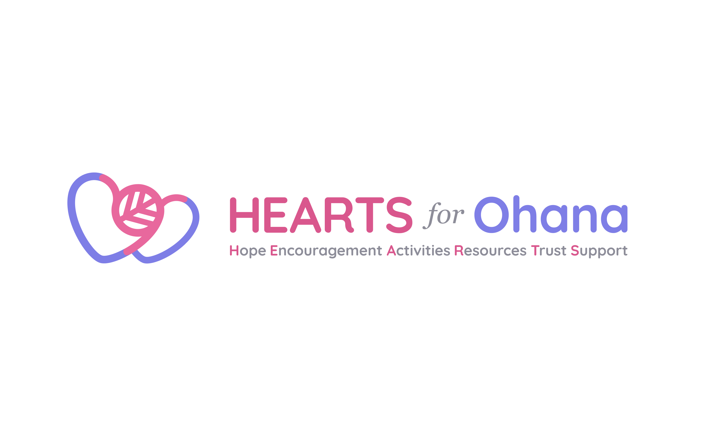

Background
In Summer 2021, I volunteered as a design advisor for Breast Cancer Hawaii.
Breast Cancer Hawaii’s mission is to improve the quality of life for
Hawaii’s breast cancer community by connecting people with relevant
resources and meaningful support. During my time with the organization, I designed
logos for multiple programs and created design guidelines that visually
reflect their mission.
This is a documentation of the logo design work I did for one of their
programs — Hearts for Ohana.
Brand Core
Breast Cancer Hawaii’s brand core values are the essence of what makes
their organization unique, valuable and successful.
To begin the brand enhancement, I discussed with the founder to synthesize
the value and experience the organization aims to deliver to their participants.
Through our conversations, the founder expressed that the visual language
should encompass all people who are navigating their own breast cancer
diagnosis, along with uplifting those who might be overwhelmed.
It was important to emphasize that breast cancer, as a topic, is relevant to all genders and
all family members. Hearts for Ohana in particular seeks to support the whole family,
particularly the children, as Hawaii currently faces a gap in direct services
and resources for children whose parent(s) is/are facing a cancer diagnosis.

Exploration
My goal was to visually articulate the core values through different design elements that make up the logo. While doing so, I pushed for a modern look and feel that convey a sense of profession and trustworthiness while preserving the playfulness.
Logomark
In Hawaii, Ohana means “family” — but it also means “flower” in Japanese. As the founder is Japanese and the language is widely used in Hawaii, I explored how these two concepts could mesh with their brand core values. The Hearts for Ohana logomark is an interpretation of this double entendre that supports the program's purpose and the organization’s visual language.

I envisioned the logomark to be a symbol that culturally resonates with
the local community. It is an expression of Breast Cancer Hawaii's core values,
as well as the program's commitment to serve family members.
The logomark is a combination of two hearts and a monstera leaf
which is widely grown in Hawaii. The abstracted leaf became the center piece
that unifies the hearts with it's borders extending outwards to connect
the two elements. The color choices reflect the organization's desire to position
the topic of cancer as gender-inclusive.
One of the constraints for the brand guidelines was for the fonts to be accessible to anyone who is expected to apply the brand to their materials. With this, I chose Quicksand as the primary typeface due to its quirky yet legible form that introduced a friendly tone to the brand. Georgia, a serif typeface, was used as a complimentary element to appear elegant while contrasting with the playful visual language.